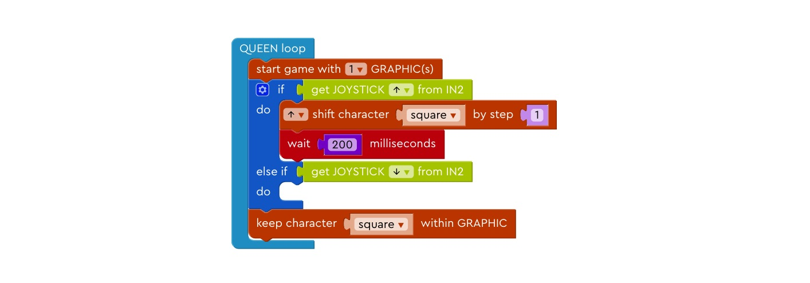
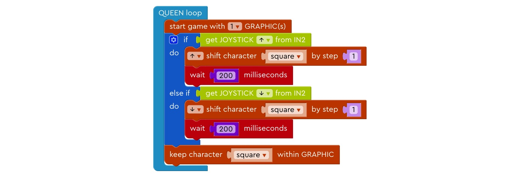
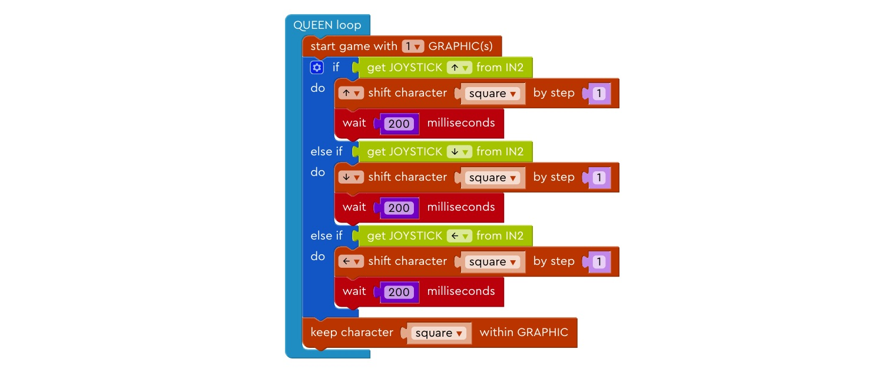
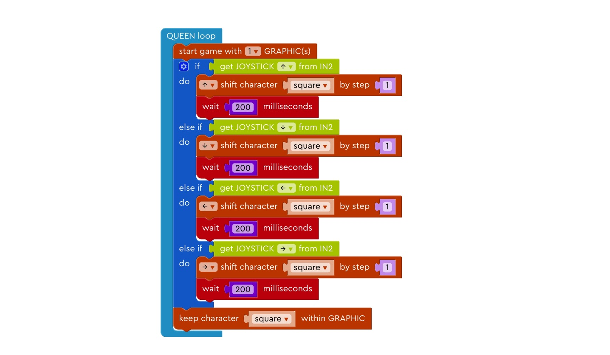
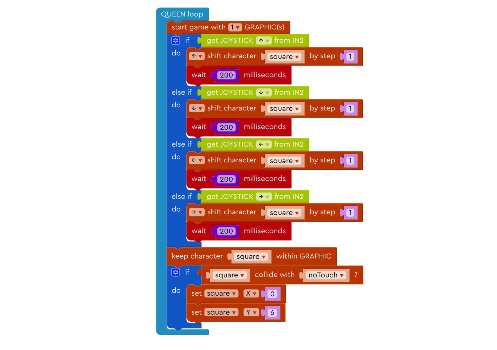
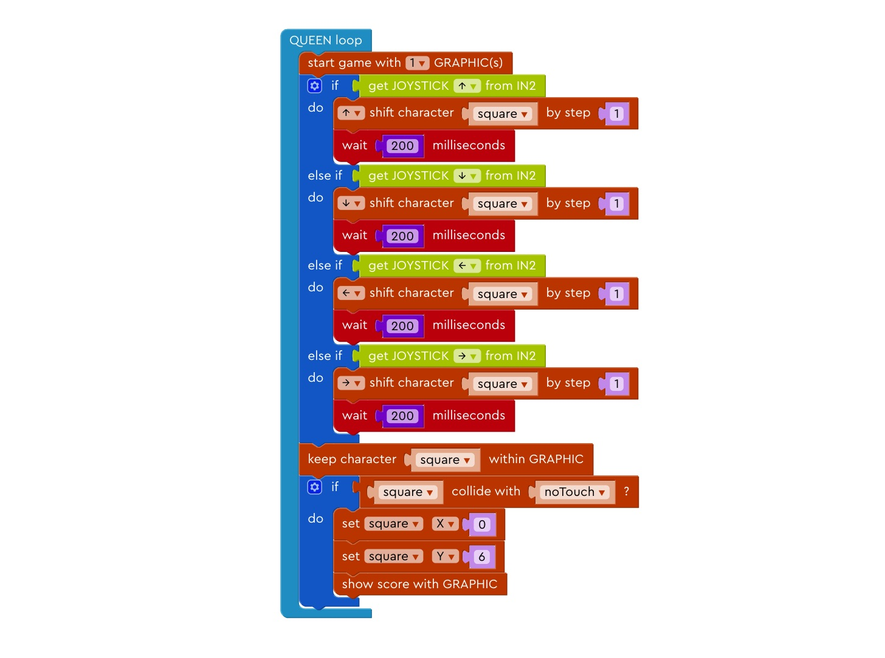

Lesson¶
Lesson 1¶
Step 1: Basic Setup¶
Left for input, right for output.
Step 2: Create a square¶
Draw a blue square at the bottom left corner, a shown in the demo.
Step 3: Create a square¶
Try draw a yellow square at the same position.
Step 4: Rename the character¶
Change the name from “character” to “square”.
Step 5: Light up the LED board¶
Drag the block “start game with 1 GRAPHIC(s)” into the QUEEN Loop.
Step 6: Move Up 1¶
Drag “if-do” block under the “start game with 1 GRAPHIC” block.
Step 7: Move Up 2¶
Drag the “Get JOYSTICK (direction) from IN2” block and put it after “if” block.
Step 8: Move Up 3¶
Drag the “(direction) shift character x by step n” block and put it inside the “if-do” block.
Step 9: Move Up 4¶
Drag the “wait n milliseconds” block and put it under the previous block and change the number to 200.
Step 10: Keep the square inside LED board¶
Drag the “keep character within GRAPHIC” block and put it under the “if” block.
Step 12: Move down 2¶
Drag the “get JOYSTICK (direction) from IN2”, put it after the “else-if” branch, and get the downward direction from the joystick.

Step 13: Move down 3¶
In the else-if branch, make the square move one step down if and wait 200 milliseconds before moving on to the next block.

Step 14: Move left¶
Repeat the process in previous steps to make the block move left when the joystick is shifted to the left.

Step 15: Move right¶
Repeat the process in previous steps to make the block move right when the joystick is shifted to the right.

Lesson 2¶
Prelude¶
Now that we can control the movement of the character, let’s try to build a very simple game.
Step 1: Create a center square¶
Draw a red square at the center of the LED board, as shown in the demo.
Step 2: Rename the new square¶
Change the name of the newly created red square’s name to “noTouch”.
Step 5: Reset the game¶
Drag the blocks that set the position of the character into the “if” block.

Step 7: Count Scores 1¶
Drag “set score” block to Queen setup.
Step 8: Count Scores 2¶
Change function name of the “do (function) per n milliseconds” to “countScores”.
Step 9: Count Scores 3¶
Change the time of the “do countScores per n milliseconds” block to 1000
Step 10: Counting Scores 4¶
Drag “change score by 1” block in the “countScores” function block.
Step 11: Show Scores¶
Drag the “Show score with GRAPHIC” block and put it after we change the coordinates of the blue square.

Step 13: Counting Scores 1¶
Can you change one number so that the scores increases by 2 every 1000 milliseconds?
Step 14: Counting Scores 2¶
Can you change one number so that the scores increases by 1 every 2 seconds? (1 second = 1000 millisecond)